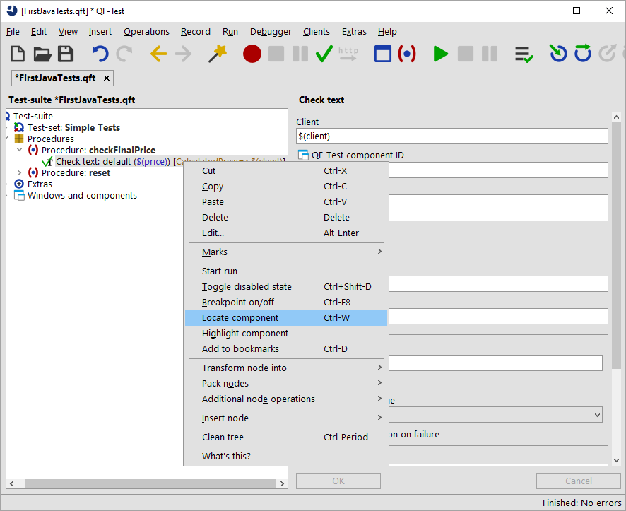
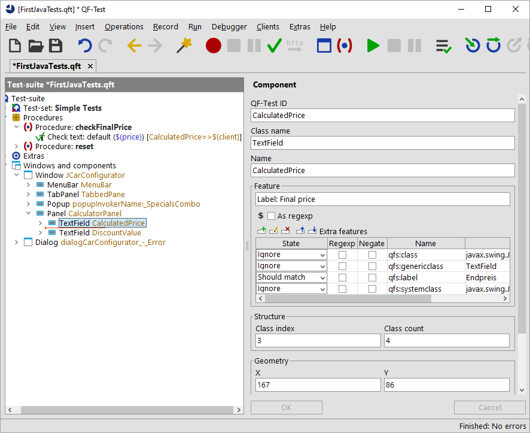
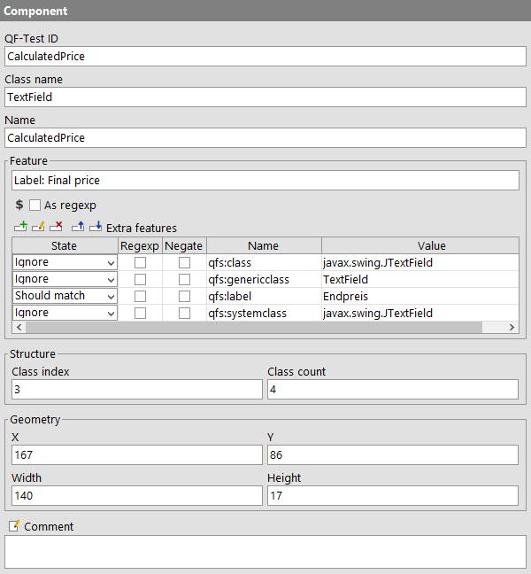

| Version 6.0.3 |
The topic 'components' is covered by several videos:
 The video 'Component
recognition' first explains the criteria for component recognition, then (starting at min
13:07) the use of generic components using regular expressions, followed by generic components using variables
in component recognition attributes.
The video 'Component
recognition' first explains the criteria for component recognition, then (starting at min
13:07) the use of generic components using regular expressions, followed by generic components using variables
in component recognition attributes.
There are two videos available explaining in detail how to deal with a
ComponentNotFoundException:
The video 'ComponentNotFoundException - simple case' shows a simple case.
A more complex case is discussed in the video 'ComponentNotFoundException - complex case'.
Live recording of the special webinar 'Component recognition'.
QF-Test stores the information about how to find a component in the UI of the SUT in the 'Windows and components' section. It analyses the component information when recording actions to the SUT and saves the information for the components the user interacted with in the details of the 'Component' nodes.
Since Java Swing, JavaFX and SWT have a clear concept of how a certain component has to be technically implemented, you rarely have to bother about the information QF-Test stores for a certain component. In most cases QF-Test will recognize the component it has to replay some event to. Only when the UI of your application changed significantly in a way QF-Test cannot compensate, you will have to think about 'Component' nodes.
Note For a detailed instruction about what to do then, please refer to the manual chapter Troubleshooting component recognition problems. There are also links to videos showing respective samples.
This section is meant to give you an idea about which kind of information is stored in the 'Component' nodes and how QF-Test uses it to recognize a component in the UI.
Let's have a look at the details of a 'TextField' component node.
|
|  | ||
|
| Figure 4.2: Locating a component | ||
This is going to take you directly to the 'TextField CalculatedPrice' node in the 'Windows and components' section.
|
|  | ||
|
| Figure 4.3: Component tree | ||
Let's have a look at the properties of this component node used to identify the UI element.
|
|  | ||
|
| Figure 4.4: Details of the 'Component' node | ||
The topmost attribute is 'QF-Test ID', which provides the 'handle' to the component to be used in the test-cases and procedures. All other attributes refer to the component in the UI.
The next attribute is 'Class name'. In our case it is 'TextField'. For
component recognition it is essential to know the class of a component. In fact this class
is a generalized value of the Java class or Java system class. This is helpful to achieve
recognition independently of the specific implementation and allows an easy porting of tests
e.g. from Java Swing to its successor JavaFX.
However, QF-Test saves the specific and the system class in the 'Extra features' table as
'Extra features' named qfs:class and qfs:systemclass. By default, they are
not used for component recognition.
Other examples for classes would be 'Panel', 'Dialog' or 'Button'.
The 'Name' attribute is the name or id given to the UI component by the programmer. If there is a Name then this, together with the class, is all QF-Test needs to identify a component in the UI.
If the programmer did not set a name or id for the UI component and the 'Name' attribute therefore remained empty QF-Test needs other criteria like a certain text associated with the component, index information and geometry.
A feature associated with a button for example would be the text shown on the button.
QF-Test saves a text directly belonging to the UI component in the
'Feature' attribute. Texts in the vicinity of a component
that could be the label of the component are saved in the 'Feature' attribute with the
prefix Label: and in the 'Extra features' table with the
'Extra features' Name qfs:label.
The Structure information refers to all UI components of the respective class. The total number of UI components of that class is saved in the 'Class count' attribute, the index of the component itself in the 'Class index' attribute.
Last there is the Geometry information. It is the one having the lowest weight within the recognition algorithm. It can be of value if no other helpful information is available for a component.
In case you are interested in further details of the component recognition you will find such in the Component recognition chapter of the technical reference of the manual.
If you want to get a feeling for the component recognition you could play around with the attribute values and see what you need to change to make QF-Test not recognize it anymore or even recognize a wrong component in the UI. You will find that you need to change quite a few attributes before QF-Test recognizes a different component. This means that component recognition with QF-Test is very robust. With regression tests a significant part of the UI component criteria need to change before QF-Test will not recognize the component anymore even if the component has no name or id.
When you click the 'Component' node QF-Test will highlight the recognized component in the UI by outlining it with a dark blue border.
CalculatedPrice from the 'Name' attribute. Because
as long
as there is an entry in the 'Name' attribute QF-Test will not consider the
attributes below.
Label: Final price to
Label: xxx.
Label: Final price,
either via the respective toolbar button or by typing [Ctrl-Z].
qfs:label value in the 'Extra features' table from Final price to
Discount.
qfs:label value in the 'Extra features' table
back to Final price.
Label: Final price to
Label: Discount.
This is just to give you a bit of a feeling for component recognition. In the above mentioned chapters (and some more) of the manual you will find detailed information about what to do when you have trouble with component recognition.
| Last update: 9/6/2022 Copyright © 2002-2022 Quality First Software GmbH |